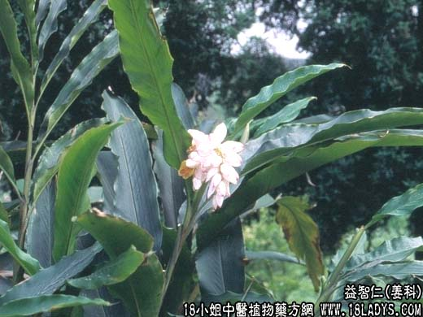

【中药概述】
益智仁为姜科草本植物植物益智的成熟果实。辛、温。归脾、肾经。
1．补肾固精、缩尿：用于下元虚冷，小儿遗尿，尿频、遗精白浊等，如（<妇人良方>缩泉丸）（益智仁散）。
2．温脾止泻、摄涎：用于脾胃虚寒，脾寒泄泻，腹中冷痛，口多唾涎等，常配白术，黄芪，砂仁，木香，茯苓等，如（益智散）。
【药效鉴别】
益智仁燥脾摄涎唾的作用大于复盆子。尤能“敛摄脾肾之气”，故能温补肾阳而固精缩尿，暧脾胃而止泻、摄唾。
【临证应用】
遗尿症：补骨脂（盐炒），益智仁（盐炒）各60g，研末分作6包，每日早晨用米汤泡服1包。6日1疗程。
【药理作用】
有健胃、抗利尿及减少唾液分泌的作用。
【化学成分】
含挥发油，油中主要为萜稀、倍半萜烯、倍半萜醇等，尚含有甙类。
【用量用法】
3——9g，水煎服，或入剂。
【使用注意】
能伤阴助火，故阴虚火旺或湿热内盛者忌。
【附】
盐益智仁：一则减其辛燥，二则加强入肾之功。